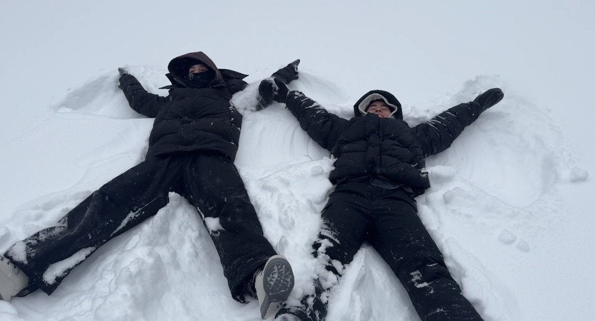
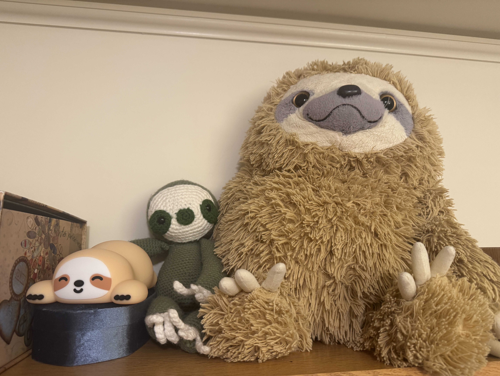

<div class="textcontainer">
<h3>About Me</h3>
<p class="margin"> </p>
<div class="center-row">

<p id="aboutme">
Hello! My name is Eliza. I am a senior in Lowell house. I enjoy walking places really slowly, playing frisbee
and occassionally swimming. I also enjoy being warm and do not like being cold, but snow angels can be fun sometimes.
</p>
</div>
<br></br>
I am a huge fan of really cute sloths so I've acquired lots of them over the years.<br>
Meet these three! Shiny, Chonkey, and Honkey.
<br></br>

</div>